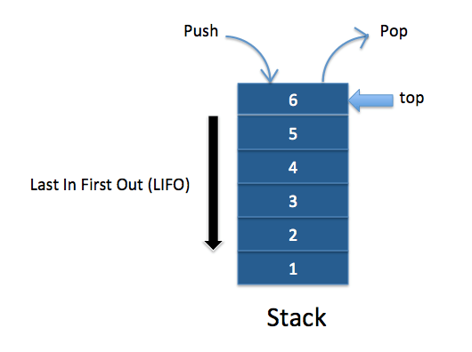

Intro
Stack is a linear data structure which follows a particular order in which the operations are performed. The order may be LIFO(Last In First Out) or FILO(First In Last Out).
There are many real-life examples of a stack. Consider an example of plates stacked over one another in the canteen. The plate which is at the top is the first one to be removed, i.e. the plate which has been placed at the bottommost position remains in the stack for the longest period of time. So, it can be simply seen to follow LIFO(Last In First Out)/FILO(First In Last Out) order.
Every time an element is added, it goes on the top of the stack and the only element that can be removed is the element that is at the top of the stack, just like a pile of objects.